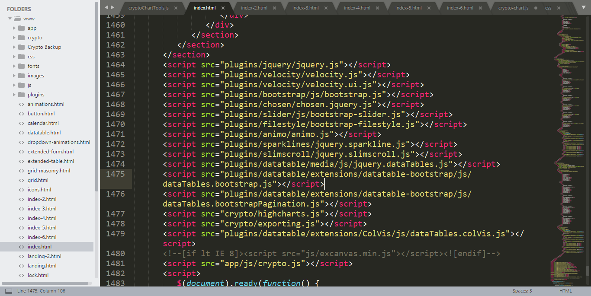
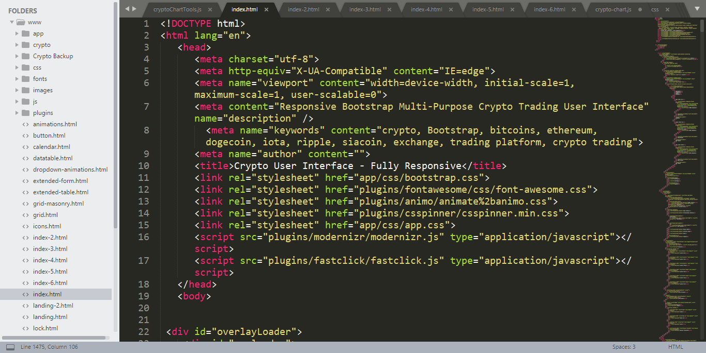

Version: 1.0.0
Version Date: 03rd March 2018
Last Update: -
Author: CoderBoys
Support: www.xbootstrap.com/support
Email: support@xbootstrap.com
Thank you for purchasing Tradify. If you have any questions which is beyond this scope, please visit our Support Website
Finecharts was created as a great shortcut for learning and creating your very own trading plateform.
There are several different ways to use Tradify:
We've tried to make things as easy as possible for you to use, and to use it how you want to.
You might just be looking for some pre-styled candlestick chart existing project, or you might be wanting to learn building graphs & charts and aren't sure where to start, or you might be wanting to quickly integrate some pages for an urgent client meeting.
However you want to use Tradify is totally up to you.
In the 'HTML Files' folder are the following folders:
Here is how you can simply transform candlestick chart.
Simply replace:
copy all of the required CSS & JS files.
 For candlestick chart you only need two JS file "highcharts.js & exporting.js